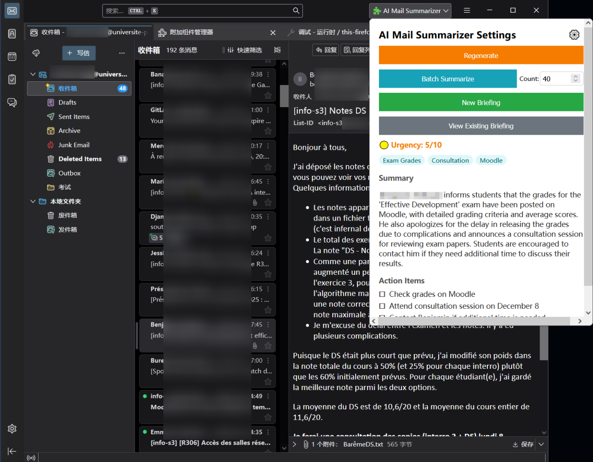

Profile 个人简介 Profil
I am a motivated, curious, and fast learner. I work seriously and am fully invested in what I do. I also enjoy working in groups, collaborating with others, and finding solutions to problems. 我是一个积极进取、充满好奇心且学习能力强的人。我工作认真，全身心投入。无论是团队协作还是独立解决问题，我都充满热情。 Je suis quelqu'un de motivé, curieux et qui apprend vite. Je travaille sérieusement et je m'investis dans ce que je fais. J'aime aussi travailler en groupe, avec les autres et chercher des solutions aux problèmes.
Education 教育经历 Formation
University of Paris-Saclay - IUT d'Orsay 巴黎萨克雷大学 - 奥赛IUT Université Paris-Saclay - IUT d'Orsay
Associate Degree in Computer Science (Bac+2) 计算机科学学士学位 (大二，在读) Bac+2 Informatique (En cours)
Tianjin Yao Hua JiaCheng International High School 天津耀华嘉诚国际中学 Lycée international Yao Hua JiaCheng de Tianjin
Skills 技能专长 Compétences
Hard Skills
- Java, C++, C#, C
- HTML, CSS, PHP, Web Dev
- Database (PL/SQL)
- App Dev (SwiftUI)
- Simple Circuit Design
Soft Skills
- Teamwork & Git 团队协作 & Git Travail en groupe avec GIT
- Project Management 项目管理 Gestion de projets
- Rigorous & Methodical 严谨 & 有条理 Rigoureux et méthodique
- Client Requirements Analysis 客户需求分析 Recueil de besoins client
Projects 项目经验 Projets Click to view project details 点击以查看项目详情 Cliquez pour voir les détails du projet
2D RPG Game 2D RPG 游戏 Jeu Vidéo RPG 2D
C++/SDL2 game engine with rendering, enemy logic, and dynamic camera. 自主开发的 C++/SDL2 游戏引擎，实现渲染、敌人逻辑和动态相机。 Développement autonome d'un RPG 2D en C++/SDL2 (moteur, logique, caméra).

Tourism Website 旅游网站前端 Intégration Web Front-end
Responsive HTML/CSS website respecting W3C standards. 响应式 HTML/CSS 旅游网站，符合 W3C 标准。 Développement responsive d'un site touristique (HTML/CSS, W3C).

Real Estate DB 房产管理数据库 Base de Données & Modélisation
Real estate management database using SQLite. 基于 SQLite 的房地产管理系统数据库设计。 Création d'une BDD de gestion immobilière sous SQLite.
UI/UX Design UI/UX 设计 Conception IHM/UX
Student residence management interface using Personas and Penpot. 学生公寓管理界面原型设计，使用 Personas 和 Penpot。 Prototypage pour gestion de résidences étudiantes (Personas, Penpot).

iOS Task App iOS 任务管理应用 Application Mobile iOS
SwiftUI task manager with Urgency/Importance classification. 使用 SwiftUI 开发的任务管理工具（紧急/重要分类）。 Outil de gestion des tâches (Urgence/Importance) en SwiftUI.
AI Mail Summarizer 邮件智能摘要助手 Résumeur de Mails IA
Thunderbird extension for AI-powered email summarization and chatting. 基于 AI 的 Thunderbird 邮件摘要与对话扩展。 Extension Thunderbird pour le résumé et le chat d'e-mails par IA.
Subtitle Tool 字幕处理工具 Outil de Traitement de Sous-titres
Python/Tkinter tool for multi-format subtitle processing with AI integration. Python/Tkinter 多平台工具，支持多格式和 AI 接口。 Application multiplateforme en Python (Tkinter, Multithreading, AI).
3D Scenography 3D 场景设计 Scénographie 3D (Unity)
Interactive Unity scene with C# and Shaders. Unity 交互式场景，包含 C# 编程和 Shader 基础。 Création de scène interactive sur Unity avec C# et Shaders.
My GitHub Contributions 我的 GitHub 贡献 Mes Contributions GitHub
More GitHub Stats 更多 GitHub 数据 Plus de stats GitHub

Ambitions 职业抱负 Ambitions
My main goal is to work in software development, especially in mobile applications or video games. In the long term, I would like to participate in innovative projects, or even manage a small development team. 我的主要目标是从事软件开发工作，特别是移动应用或游戏开发。从长远来看，我希望参与创新项目，甚至领导一个小型开发团队。 Mon objectif principal est de travailler dans le développement logiciel, notamment dans les applications mobiles ou les jeux vidéo. À long terme, je voudrais participer à des projets innovants, ou même gérer une petite équipe de développement.
Professional Career Path 职业规划 Parcours Professionnel
My career goal is to become an expert in software development and technology project management. After obtaining a master's degree in computer science, I wish to create my own software company, specializing in innovative solutions to facilitate daily life and professional activities. 我的职业目标是成为软件开发和技术项目管理方面的专家。在获得计算机科学硕士学位后，我希望创办自己的软件公司，专注于开发便利日常生活和商业活动的创新解决方案。 Mon objectif de carrière est de devenir un expert en développement logiciel et en gestion de projets technologiques. Après avoir obtenu un master en informatique, je souhaite créer ma propre entreprise de logiciels, spécialisée dans des solutions innovantes pour faciliter la vie quotidienne et les activités professionnelles.
Start a Software Company 创办软件公司 Débuter une entreprise de logiciels
Work & Gain Experience 工作积累经验 Travailler, acquérir de l'expérience
Master's in Computer Science 计算机科学硕士 Obtenir un master en informatique
Interests 兴趣爱好 Centres d'Intérêt
- Sports: Cycling, Kung Fu 体育: 自行车, 功夫 Sportifs: Cyclisme, Kung Fu
- Artistic: Photography, Video Editing, Digital Art 艺术: 摄影, 视频剪辑, 数字绘画 Artistiques: Photographie, Montage vidéo, Dessin numérique
- Other: 3D Modeling, Circuit Design, Music, Video Games 其他: 3D建模, 电路设计, 音乐, 电子游戏 Autres: Modélisation 3D, Conception de circuits, Musique, Jeux vidéo
Languages 语言能力 Langues
- French: B2 法语: B2 Français: B2
- English: B2 英语: B2 Anglais: B2
- Chinese: Native 中文: 母语 Chinois: Langue maternelle
Contact 联系我 Contact
You can reach me at: tanghaochen@hotmail.com 您可以通过以下方式联系我： tanghaochen@hotmail.com Vous pouvez me joindre à : tanghaochen@hotmail.com